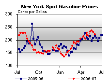

Released on June 6, 2007
(Next Release on June 13, 2007)
What Lies Ahead
Perhaps one of the most often asked questions of EIA is, “So, what do you expect to happen next?” Each year, EIA publishes a projection, currently to 2030, for U.S. energy markets (the Annual Energy Outlook) and global energy markets (the International Energy Outlook). Every month, EIA publishes a projection for U.S. energy markets for the remainder of the current year and the next year (the Short-Term Energy Outlook), with the next issue to be published next Tuesday, June 12. Yet, even with all of these projections, it seems the public is still thirsty for information on what EIA expects to happen next. Lately, while retail gasoline prices have received the bulk of attention, a related statistic, refinery utilization, is also being closely watched and some analysts are anxious to figure out what lies ahead over the next few weeks for this statistic.
While EIA’s forthcoming June 2007 Short-Term Energy Outlook will provide EIA’s projection on refinery utilization, it is also instructive to look at the pattern in recent years. The chart below shows the percent of refinery operable capacity that has been used each week during the months of May and June from 2004 to the present, based on the most comparable weekly period in each year. In 2004 and 2005, prior to the devastating hurricanes in the fall of 2005, refinery utilization rates recovered sharply from seasonal late winter maintenance to reach levels by May and June hovering around 95 percent. However, refinery utilization rates in May and June 2006, and again in May 2007, were well below that percentage. The 2006 refinery utilization data was influenced by Hurricanes Katrina and Rita both directly and through their impacts on maintenance schedules. This year, refinery outages and maintenance extending into the early part of summer have kept refinery utilization rates at roughly 90 percent. In a refining system where capacity is over 17 million barrels per day, 5 percent can equate to nearly 900,000 barrels per day in additional crude oil inputs to refineries, providing at least that much in additional refined products. With crude oil inventories at the top of the average range, there is certainly enough additional crude oil that can be used in refineries, and with gasoline inventories well below the average range, there is certainly a need for more gasoline supply. While gasoline inventories have built in recent weeks, largely due to increased imports and higher blending activity, additional refinery production of gasoline would certainly help gasoline inventories rebuild to more normal levels more quickly than the current pace. With gasoline refining margins (the difference between the spot price of gasoline and the cost of crude oil) at very high levels, refiners have a strong economic incentive to run their units at the highest possible rates, suggesting that unplanned refinery outages and extended maintenance are the key drivers of current utilization patterns.
How high refinery utilization rates get in the next few weeks remains to be seen, and EIA’s projection for June and subsequent months will be available in less than a week.
Gasoline and Diesel Prices Both Down
For the second consecutive week, the U.S. average retail price for regular gasoline decreased, falling 5.2 cents to 315.7 cents per gallon as of June 4, 2007. Prices are still 26.5 cents per gallon higher than this time last year. All regions reported price decreases. East Coast prices dropped 3.0 cents to 306.8 cents per gallon. The largest regional decrease was in the Midwest, where prices fell 9.5 cents to 322.5 cents per gallon. Prices for the Gulf Coast decreased 4.7 cents to 302.0 cents per gallon, while Rocky Mountain prices fell 1.6 cents to 326.0 cents per gallon. West Coast prices were down 3.1 cents to 331.8 cents per gallon. The average price for regular grade in California was down 3.3 cents to 337.4 cents per gallon, but remains 10.5 cents per gallon above last year's price.
Retail diesel prices also fell last week, decreasing 1.8 cents to 279.9 cents per gallon. Prices are 9.1 cents per gallon lower than at this time last year. All regions reported price decreases. East Coast prices fell 1.7 cents to 279.4 cents per gallon. In the Midwest, prices were down 1.9 cents to 276.4 cents per gallon, while the Gulf Coast saw a decrease of 2.7 cents to 274.9 cents per gallon. Rocky Mountain prices were down 2.2 cents to 295.8 cents per gallon. Prices on the West Coast saw a decrease of 0.8 cent to 293.1 cents per gallon, while California prices fell 0.3 cent to 297.2 cents per gallon, 25.5 cents per gallon lower than at this time last year.
May Propane Build Near Average
Primary propane stockholders added 8.0 million barrels to inventories during May, a level just slightly above the most recent 5-year average of nearly 7.8 million barrels. Contributing to this build was last week’s 1.6 million barrels that moved U.S. propane inventories up to an estimated 36.7 million barrels as of June 1, 2007. Most of the weekly gain was concentrated in the East Coast and Midwest regions that reported respective increases of 0.7 million barrels and 0.8 million barrels. Inventory gains, although smaller, were also recorded in the combined Rocky Mountain/West Coast region that measured 0.2 million barrels. In contrast, Gulf Coast inventories remained unchanged during this same time. Propylene non-fuel use inventories remained flat last week but accounted for a smaller 7.2 percent of total propane/propylene inventories, down from 7.4 percent reported during the prior week.
Text from the previous editions of “This Week In Petroleum” is now accessible through a link at the top right-hand corner of this page.
| Retail Prices (Cents Per Gallon) | |||||||
| Retail Data | Changes From | Retail Data | Changes From | ||||
| 06/04/07 | Week | Year | 06/04/07 | Week | Year | ||
| Gasoline | 315.7 | Diesel Fuel | 279.9 | ||||
| Spot Prices (Cents Per Gallon) | |||||||||||||||||||||||||||||||||||||||
|  | |||||||||||||||||||||||||||||||||||||||
|
|||||||||||||||||||||||||||||||||||||||
| Stocks (Million Barrels) | |||||||
| Stocks Data | Changes From | Stocks Data | Changes From | ||||
| 06/01/07 | Week | Year | 06/01/07 | Week | Year | ||
| Crude Oil | 342.3 | Distillate | 122.3 | ||||
| Gasoline | 201.5 | Propane | 36.720 | ||||